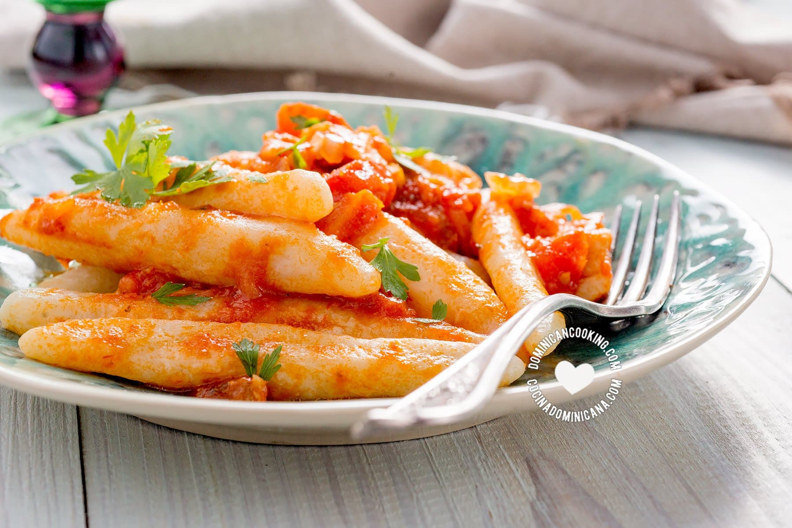

The domplines are a dish of joy for me and any Dominican, the texture of the dough and the flavor of the sauce that you put on them are what make them so damn good for me.
Essentially, the domplines are just boiled dough that you cover with the sauce of your preference. There are domplines covered in cheese, milk cream, "Salami guisado" (stewed salami), and more, so there are a variety of flavors. If someday you are in the country, I recommend you try it!.
Although I tell you about a few sauces, in this article I will just concentrate on the "salami guisados" and the preparation of the dough (this is my mother's recipe). So let's begin with the ingredients.
- 1 pound of flour.
- 450 ml of milk.
- 1 spoon of butter.
- 2 eggs.
- 1 teaspoon of salt.
- 1 teaspoon of sugar.
- 1 cup of boiling water.
- Salami. (Try to take one from the Dominican Republic, for example, Induveca.)
- half of one bell pepper.
- half of one onion.
- half of one cubanelle pepper.
- half of one "sopita." (That's how it's called the chicken bouillon cube here, if you don't find one, you can use chicken stock. The amount you want)
- 1/2 spoon of concentrated tomato paste.
- water.
Now that you know what you need, let's cook.
- Heat the water.
- In a bowl, you are going to put the flour, the two eggs, the salt, the sugar, the milk, the butter, and the boiling water.
- Now, you are going to mix it up until you have a sticky dough that is not very liquid or dry. Add flour or milk to complete this if you need it.
- Heat a water pot until it begins to boil. Also, add a little bit of salt to the water.
- It's time to put your hands to work!. conver your hands with flour to prevent the dough from sticking to them, and start to make balls of dough. (You can also do cilinders or extend the balls of dough. You are the one that is going to eat it so choose the form that you most like!)
- Put the balls of dough in the boiling water for 45-50 minutes. You will know that it's cooked when the center of the dough is not raw.
- Cut some slices of salami and slice them in half too.
- Fry the slices of salami in a pan.
- While you are frying, slice the bell pepper, the cubanelle pepper, and the onion into cubes.
- When the salami's color changes to a darker tone, add to the pan the vegetables that you sliced before.
- Add the half of sopita (or an amount of chicken stock) and the 1/2 spoon of concentrated tomate paste to the pan and mix it. Let it cook a little bit before doing the next step.
- Put half a cup of water to the pan and mix. After that, let the stew boil until it's the consistency of a sauce. Taste it, because this is the moment to adjust the salt and sugar (secure that the stew isn't acid because of the tomato paste).
If all goes good, my friend, you should have your hands one of the dishes that I most like and represent a part of my country. Now you just have to serve a big bowl of domplines (the dough) and cover it with the sauce of salami that you made.